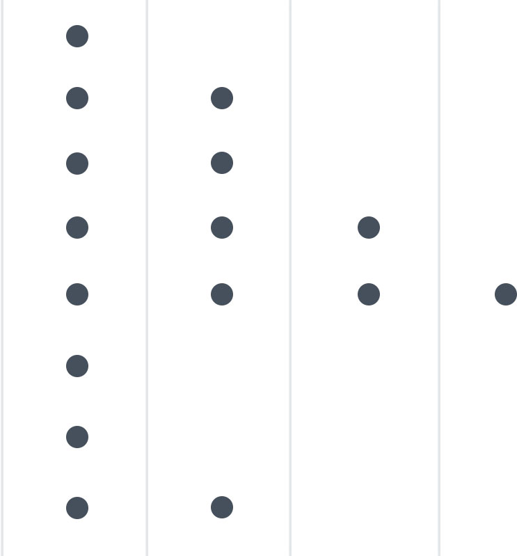

My name is Adam Risberg and I am a software developer and a masters student. I am currently on my second year taking a masters degree in computer science at Uppsala University, Sweden, with an emphasis on concurrent and parallel programs. I have been programming for a very long time, starting in 2006 when I read a book on Java programming. Ever since then I have been passionate about programming and technology in general which over time made me develop extremely strong programming skills. Java is the language I know the best but I have done non-trivial programming in many other languages as well, including JavaScript, TypeScript, C, C++, C#, Python, MATLAB, Kotlin, Erlang, Rust, PHP and ActionScript 3.
Familiar
Comfortable
Skilled
JavaScript
Python
C
Java
Overall Programming Skill
HTML/CSS
Graphical Design
Photoshop
